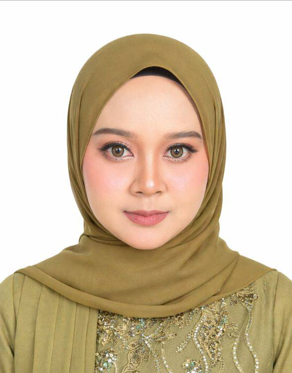

<meta charset="UTF-8">

<link rel="stylesheet" href="nav.css">
<link rel="stylesheet" href="about.css"> 


<!-- ================= NAVBAR ================= -->

<nav class="navbar">
    <h2 class="logo">Izzah Portfolio</h2>

    <ul class="nav-links">
        <li><a href="index.html">Home</a></li>
        <li><a href="about.html">About</a></li>
        <li><a href="skill.html">Skills</a></li>
        <li><a href="project.html">Project</a></li>
        <li><a href="fyp.html">FYP Progress</a></li>
        <li><a href="contact.html">Contact</a></li>
    </ul>
</nav>

<section id="about" class="about">

    <div class="section-title">
        <h2>About Me</h2>
    </div>
    <!-- WHO I AM -->
    <div class="about-intro">
        <p> I am <strong>Nurul Izzah Idris</strong>, an IT student from Universiti Teknologi MARA (UiTM) with a strong
            interest in web development and software engineering. I have gained experience in programming, system
            development, and project-based learning, which have strengthened my technical and problem-solving skills.

            I enjoy building responsive and user-friendly websites and I am passionate about becoming a web developer. I
            am also open and adaptable to other IT-related roles such as system support or software development, where I
            can continue learning and contributing.

            I am highly motivated to learn new technologies and continuously improve my skills to become a versatile and
            capable developer.
        </p>
    </div>
   <div class="personal-card">

  <!-- LEFT IMAGE -->
  <div class="profile-left">
    
  </div>

  <!-- RIGHT INFO -->
  <div class="profile-right">
    <h2>Personal Information</h2>

    <div class="info-row">

      <div class="info-item">
        <div class="icon">👤</div>
        <p>Nurul Izzah<br>Binti Idris</p>
      </div>

      <div class="divider"></div>

      <div class="info-item">
        <div class="icon">📅</div>
        <p>23 Years<br>Old</p>
      </div>

      <div class="divider"></div>

      <div class="info-item">
        <div class="icon">📍</div>
        <p>Taiping,<br>Perak</p>
      </div>

      <div class="divider"></div>

      <div class="info-item">
        <div class="icon">🎓</div>
        <p>Bachelor in Information Technology</p>
      </div>

      <div class="divider"></div>

      <div class="info-item">
        <div class="icon">🏢</div>
        <p>Universiti Teknologi MARA (UiTM)</p>
      </div>

    </div>

    <!-- SOCIAL -->
    <div class="social-icons">
      <a href="https://www.linkedin.com/in/izzah-idris-723299407" target="_blank">
    
  </a>
 <a href="https://wa.me/60192046203?text=Hi%20Izzah%2C%20I%20saw%20your%20portfolio.%20Let%27s%20collaborate!" target="_blank">
  
</a>
      </a>
    </div>

  </div>

</div>
    <!-- EDUCATION -->

    <h3 class="sub-title">Education</h3>
    <div class="card-grid">

        <div class="card">2023 - Present<br>Bachelor in Information Technology at Universiti Teknologi MARA Campus Arau
        </div>
        <div class="card">2021 - 2023<br>Sijil Tinggi Persekolahan Malaysia (STPM) at SMK Dato Kamarudin</div>
        <div class="card">2016 - 2020<br>SMK Jelai Batu Kurau</div>

    </div>

    <!-- EXPERIENCE -->

    <h3 class="sub-title">Experience</h3>
    <div class="card-grid">
        <div class="card">Pegawai Waran 1 Perak (2019)</div>
        <div class="card">Pengerusi KRS (2020)</div>
        <div class="card">Kelab Sejarah Chairman (2022)</div>
        <div class="card">3+ Years Web Development Learning</div>

    </div>
    <!-- ACHIEVEMENTS -->
    <h3 class="sub-title">Achievements</h3>
    <div class="card-grid">
        <div class="card">Kehadiran 100% (2016)</div>
        <div class="card">Anugerah Emas Kokurikulum (2018)</div>
        <div class="card">Murid Cemerlang SPM - Kesusasteraan Melayu (2020)</div>
        <div class="card">Johan Masak Rimba KRS Survival - Kebangsaan (2017)</div>
        <div class="card">Program Pertukaran Pelajar KRS & Pramuka Indonesia (2019)</div>
        <div class="card">Johan Bola Jaring - Daerah LMS (2022)</div>
    </div>
    </div>

</section>